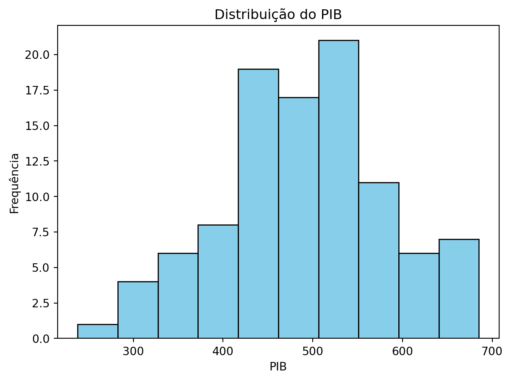

pip install nome_da_biblioteca6 Processamento e visualização de dados
Important
Página ainda em construção!
6.1 Instalação de bibliotecas
A instalação de bibliotecas em Python é essencial para expandir a funcionalidade da linguagem. Existem várias maneiras de instalar bibliotecas, mas a mais comum é usando um gerenciador de pacotes. O pip é o gerenciador de pacotes padrão para Python e geralmente acompanha a instalação do Python.
Para instalar uma biblioteca com pip, abra o terminal ou prompt de comando e digite o seguinte comando:
Substitua nome_da_biblioteca pelo nome da biblioteca que você deseja instalar.
6.2 Processamento de dados numéricos
O NumPy (Numerical Python) é uma biblioteca essencial para computação numérica em Python. Ele fornece estruturas de dados eficientes para trabalhar com arrays multidimensionais e funções matemáticas poderosas para manipulação de dados.
Para instalar o NumPy, você pode usar o pip, que é o gerenciador de pacotes padrão do Python:
pip install numpyO principal objeto em NumPy é o array multidimensional. Você pode criar arrays NumPy usando a função numpy.array() e realizar operações matemáticas básicas com eles:
import numpy as np
# Criando um array NumPy
arr = np.array([1, 2, 3, 4, 5])
# Operações matemáticas básicas
print("Soma:", np.sum(arr))
print("Média:", np.mean(arr))Soma: 15
Média: 3.0Além das operações básicas, o NumPy oferece funções universais (ufuncs) para aplicar operações em todos os elementos de um array de uma vez:
# Funções universais (ufuncs)
arr = np.array([1, 2, 3, 4, 5])
print("Quadrado de cada elemento:", np.square(arr))
print("Exponencial de cada elemento:", np.exp(arr))Quadrado de cada elemento: [ 1 4 9 16 25]
Exponencial de cada elemento: [ 2.71828183 7.3890561 20.08553692 54.59815003 148.4131591 ]A seguir, apresentamos três exemplos práticos de utilização das funções do NumPy.
Exemplo 1: Cálculo de Estatísticas Descritivas
O NumPy pode ser usado para calcular estatísticas descritivas, como média, mediana, desvio padrão, mínimo e máximo de séries temporais de dados econômicos, como o preço das ações de uma empresa ao longo do tempo.
import numpy as np
# Preço das ações de uma empresa ao longo do tempo (em dólares)
precos = np.array([100, 102, 105, 110, 108, 115, 120])
# Calculando estatísticas descritivas
print("Média:", np.mean(precos))
print("Desvio padrão:", np.std(precos))
print("Máximo:", np.max(precos))
print("Mínimo:", np.min(precos))Média: 108.57142857142857
Desvio padrão: 6.58693821908486
Máximo: 120
Mínimo: 100Exemplo 2: Análise de Séries Temporais O NumPy é útil para manipulação e análise de séries temporais. Por exemplo, você pode usar NumPy para calcular a taxa de retorno de um investimento ao longo do tempo ou para suavizar uma série temporal usando médias móveis.
precos = np.array([100, 102, 105, 110, 108, 115, 120])
# Calcular a taxa de retorno de um investimento ao longo do tempo
retornos = np.diff(precos) / precos[:-1] * 100
print("Taxa de retorno:", retornos)Taxa de retorno: [ 2. 2.94117647 4.76190476 -1.81818182 6.48148148 4.34782609]
Tip
A função np.diff em NumPy é usada para calcular a diferença entre elementos consecutivos ao longo de um determinado eixo de um array. Atenção: O tamanho do retorno da função np.diff será sempre menor que o tamanho do vetor original de entrada por um elemento. Por exemplo, se tivermos um vetor unidimensional com \(n\) elementos, a função np.diff retornará um vetor com \(n−1\) elementos, pois não há diferença para o último elemento.
precos = np.array([100, 102, 105, 110, 108, 115, 120])
# Suavizar uma série temporal usando médias móveis
tamanho_janela = 3
media_movel = np.convolve(precos, np.ones(tamanho_janela) / tamanho_janela, mode='valid')
print("Médias móveis:", media_movel)Médias móveis: [102.33333333 105.66666667 107.66666667 111. 114.33333333]
Tip
A função np.convolve em NumPy é usada para realizar a convolução entre duas sequências, representadas por dois vetores unidimensionais. A convolução é uma operação matemática que combina duas funções para produzir uma terceira função que representa a quantidade de sobreposição entre elas conforme uma delas é deslocada ao longo do eixo.
A sintaxe básica da função é np.convolve(a, b, mode='full'), onde a e b são os dois vetores unidimensionais a serem convolvidos e mode é um parâmetro opcional que define o modo de convolução. Os modos mais comuns são: - 'full': Retorna a saída completa da convolução. O comprimento do resultado será len(a) + len(b) - 1. - 'valid': Retorna apenas pontos onde as sequências se sobrepõem completamente. O comprimento do resultado será max(len(a), len(b)) - min(len(a), len(b)) + 1. - 'same': Retorna a saída do mesmo tamanho que o vetor de entrada mais longo. O comprimento do resultado será max(len(a), len(b)).
No exemplo anterior, a função np.convolve foi usada aqui para calcular a média móvel dos preços. Nesse caso, a primeira sequência é o vetor de preços e a segunda sequência é um vetor de 1s dividido pelo tamanho da janela de média móvel. Isso cria uma sequência que representa uma média ponderada dos valores.
Exemplo 3: Simulação Monte Carlo O NumPy pode ser usado para realizar simulações Monte Carlo, que são amplamente utilizadas na modelagem financeira e na avaliação de risco. Por exemplo, você pode simular o desempenho de uma carteira de investimentos ao longo do tempo sob diferentes cenários de mercado.
# Simulação Monte Carlo do desempenho de uma carteira de investimentos
num_simulacoes = 1000
num_anos = 10
retorno_medio = 0.08
volatilidade = 0.15
# Gerar retornos aleatórios usando uma distribuição normal
retornos = np.random.normal(retorno_medio, volatilidade, size=(num_simulacoes, num_anos))
# Calcular o valor final da carteira para cada simulação
investimento_inicial = 10000
valores_finais = investimento_inicial * np.cumprod(1 + retornos, axis=1)
# Estatísticas descritivas dos valores finais da carteira
print("Valor final médio:", np.mean(valores_finais[:,-1]))
print("Desvio padrão dos valores finais:", np.std(valores_finais[:,-1]))Valor final médio: 21165.949264537718
Desvio padrão dos valores finais: 9888.947340076622Mais referências sobre NumPy:
Documentação oficial do NumPy: https://numpy.org/doc/stable/ A documentação oficial do NumPy contém informações detalhadas sobre todas as funções e métodos disponíveis, além de tutoriais e exemplos.
NumPy Quickstart Tutorial: https://numpy.org/doc/stable/user/quickstart.html Este tutorial rápido fornece uma introdução rápida ao NumPy e suas funcionalidades básicas.
6.3 Análise e processamento de dados
Pandas
6.4 Visualização de dados
6.4.1 Matplotlib
6.4.2 Plotnine
6.5 Análise de Dados Avançada
Caso 1: Visualizando dados NumPy com Matplotlib
O objetivo deste exemplo é demonstrar como usar NumPy e Matplotlib em conjunto para analisar dados econômicos simulados. Leia o código abaixo e tente entender o que está sendo feito.
import numpy as np
import matplotlib.pyplot as plt
import pandas as pd
# Gerando dados aleatórios para simular valores de PIB
np.random.seed(42)
pib = np.random.normal(500, 100, 100) # Simulando 100 valores de PIB
# Calculando média, mediana e desvio padrão do PIB
media_pib = np.mean(pib)
mediana_pib = np.median(pib)
desvio_padrao_pib = np.std(pib)
print("Média do PIB:", media_pib)
print("Mediana do PIB:", mediana_pib)
print("Desvio padrão do PIB:", desvio_padrao_pib)
# Plotando um histograma dos valores do PIB
plt.hist(pib, bins=10, color='skyblue', edgecolor='black')
plt.title('Distribuição do PIB')
plt.xlabel('PIB')
plt.ylabel('Frequência')
plt.show()Média do PIB: 489.61534826059057
Mediana do PIB: 487.3043708220287
Desvio padrão do PIB: 90.36161766446295
No exemplo acima, começamos gerando dados aleatórios para simular valores de PIB usando a distribuição normal com uma média de 500 e um desvio padrão de 100. Em seguida, calculamos a média, a mediana e o desvio padrão desses valores usando funções NumPy. Para facilitar a visualização e análise dos dados, plotamos um histograma usando Matplotlib. Este histograma nos permite visualizar a distribuição dos valores do PIB e identificar tendências ou padrões nos dados.
Caso 2: Gapminder
O objetivo deste exemplo é demonstrar como usar Pandas, NumPy e Matplotlib em conjunto para realizar análises exploratórias de dados do Gapminder.
import pandas as pd
import numpy as np
import matplotlib.pyplot as plt
# Carregar os dados do Gapminder usando Pandas
gapminder = pd.read_csv('caminho/do/arquivo/gapminder.csv')
# Calcular a média da expectativa de vida usando NumPy
mean_life_expectancy = np.mean(gapminder['lifeExp'])
# Calcular a mediana do PIB per capita usando NumPy
median_gdp_per_capita = np.median(gapminder['gdpPercap'])
# Plotar um histograma da expectativa de vida usando Matplotlib
plt.hist(gapminder['lifeExp'], bins=20, color='skyblue', edgecolor='black')
plt.axvline(mean_life_expectancy, color='red', linestyle='dashed', linewidth=1)
plt.text(mean_life_expectancy + 1, 50, f'Média: {mean_life_expectancy:.2f}', color='red')
plt.xlabel('Expectativa de Vida')
plt.ylabel('Frequência')
plt.title('Distribuição da Expectativa de Vida')
plt.show()
# Plotar um gráfico de dispersão entre expectativa de vida e PIB per capita usando Matplotlib
plt.scatter(gapminder['gdpPercap'], gapminder['lifeExp'], alpha=0.5)
plt.axhline(mean_life_expectancy, color='red', linestyle='dashed', linewidth=1)
plt.axvline(median_gdp_per_capita, color='green', linestyle='dashed', linewidth=1)
plt.text(median_gdp_per_capita + 500, mean_life_expectancy + 1, f'Mediana: {median_gdp_per_capita:.2f}', color='green')
plt.xlabel('PIB per Capita')
plt.ylabel('Expectativa de Vida')
plt.title('PIB per Capita vs Expectativa de Vida')
plt.show()No código acima, começamos carregando os dados do Gapminder usando a função pd.read_csv() do Pandas. Em seguida, calculamos a média da expectativa de vida e a mediana do PIB per capita usando funções NumPy np.mean() e np.median(), respectivamente. Para visualizar a distribuição da expectativa de vida, plotamos um histograma usando a função plt.hist() do Matplotlib.